BeforeFrench Cross
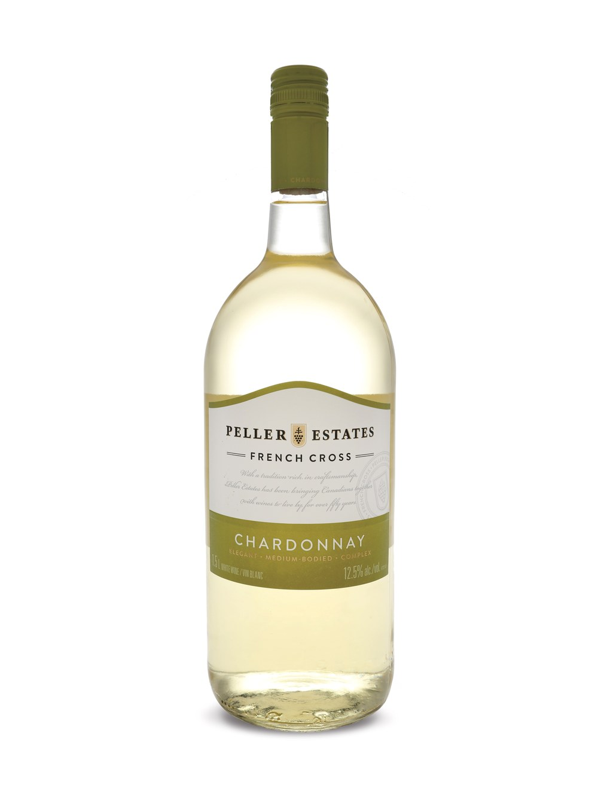
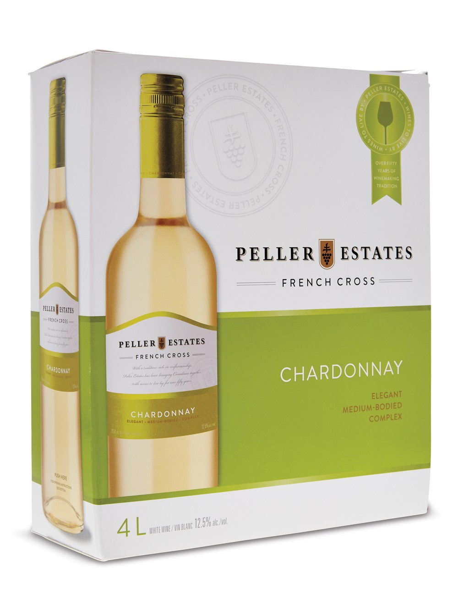
Peller Family Vineyards / Rebrand + packaging system
French Cross was one of Canada’s biggest wines. We renamed it, rebuilt the system and carried the change across bottles, cartons and boxes without asking loyal buyers to start from zero.
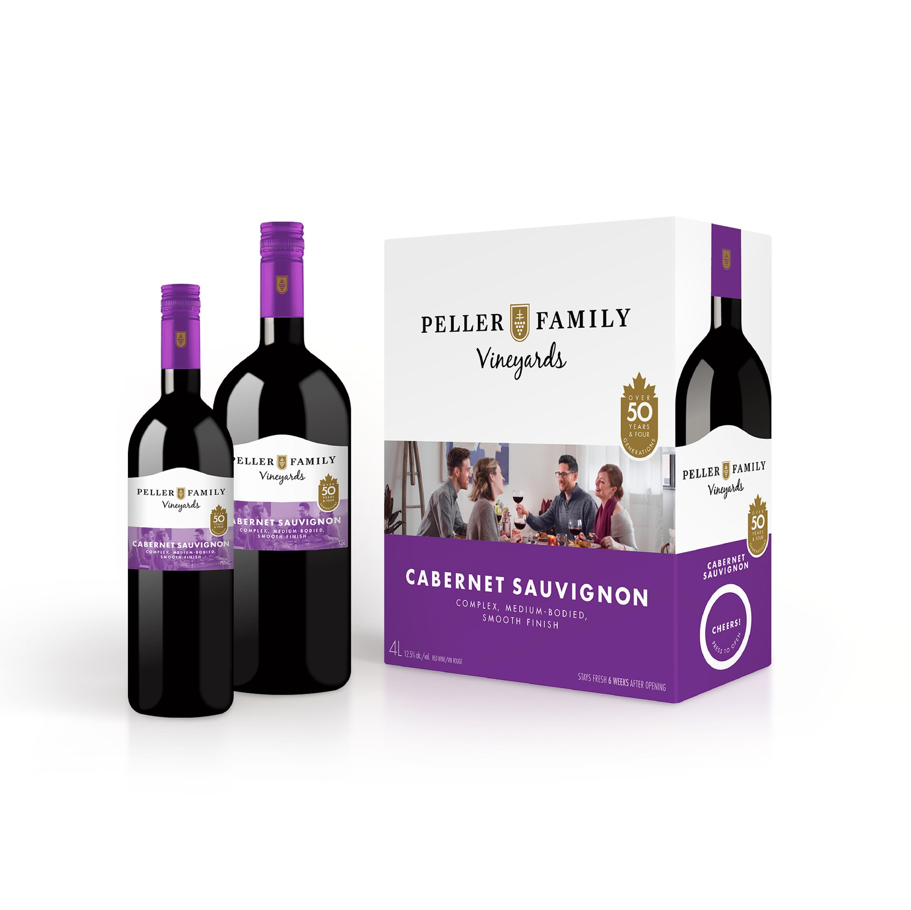
✦ Familiar, not frozen.
01 / The risk
At the time, French Cross sold more by litre than any other wine brand in Canada. People already knew the crest, the colour bands and where to find it.
The job was not to wipe the slate clean. It was to make the brand relevant to a younger audience without throwing away the memory that made it valuable.


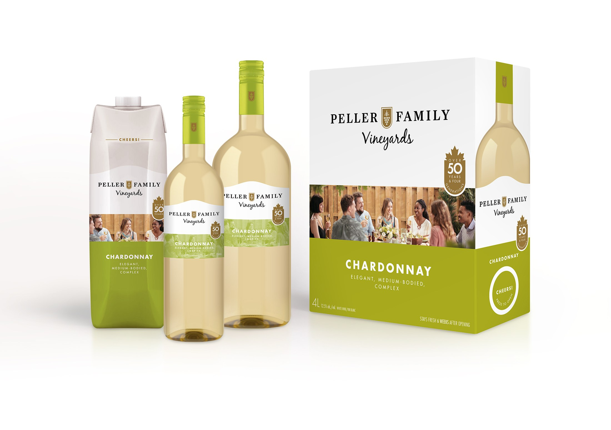
Historic French Cross pack photography: LCBO product archive. Volume context: Communication Arts / Smaller profile ↗
02 / The method
We did not bet a national portfolio on taste.
The work moved through repeated consumer and competitive testing. Name, crest, hierarchy, photography and format were judged as one shelf system, not as isolated design decisions.
The balance, hierarchy and signals people already used to find the brand.
The name, tone, identity and reason for choosing each varietal.
The idea across bottle, carton and box before the whole portfolio moved.
03 / Identity
French Cross became Peller Family Vineyards. The crest was simplified. The masterbrand got clearer. The architecture made room for a much larger family.
It looked new, but the bones still felt familiar.
One masterbrand / Three tiers
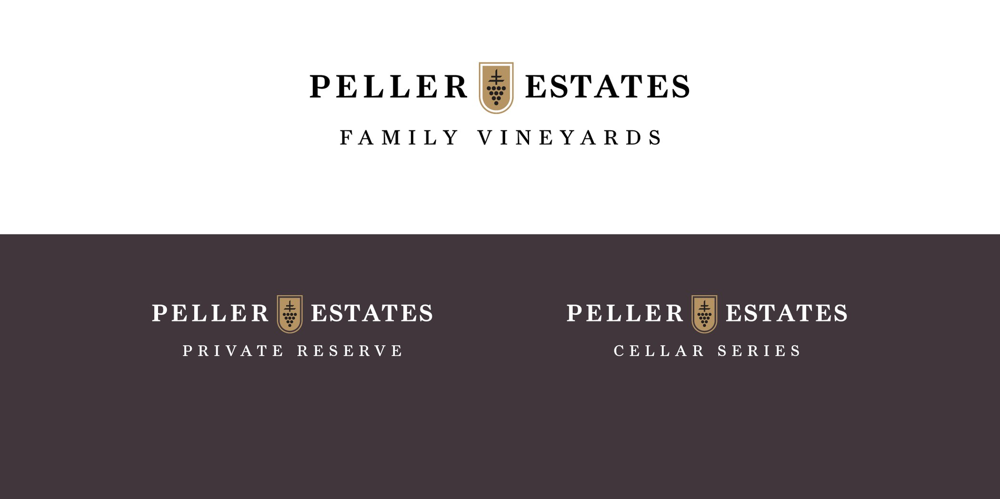
Old crest / Updated crest
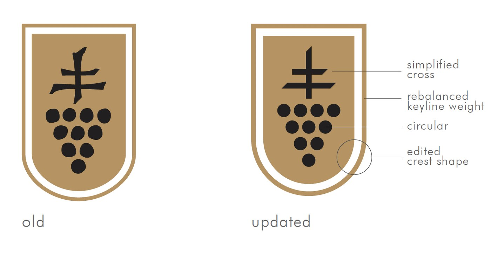
04 / Occasion
Each SKU got custom photography built around an occasion. No stock vineyard. No anonymous tasting ritual. The image helped people picture where the wine belonged.
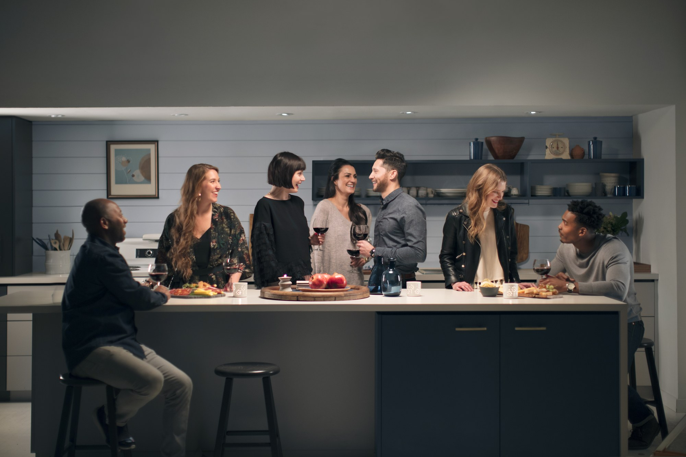
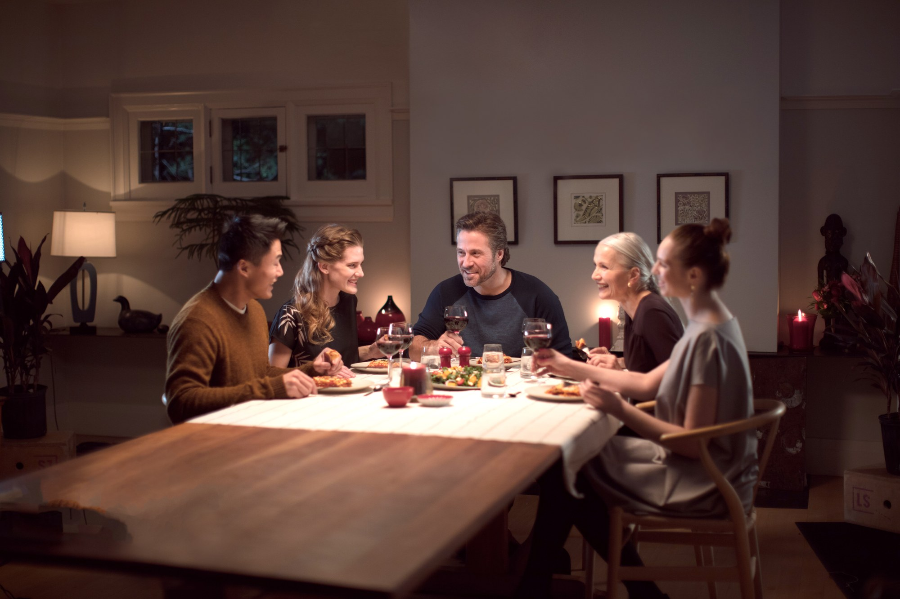
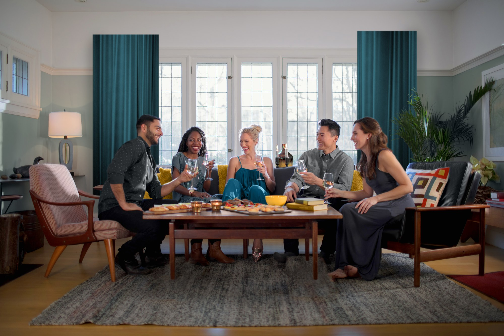
05 / The system
The idea had to work in the real world: 750 mL, 1.5 L, 1 L carton, 4 L box and a wide varietal range. Recognition came from structure. Choice came from colour and photography.
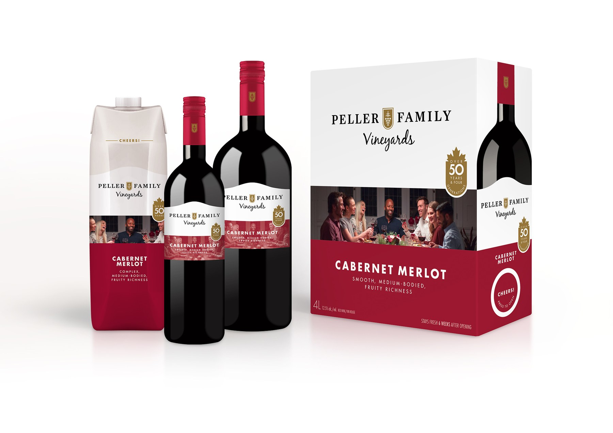
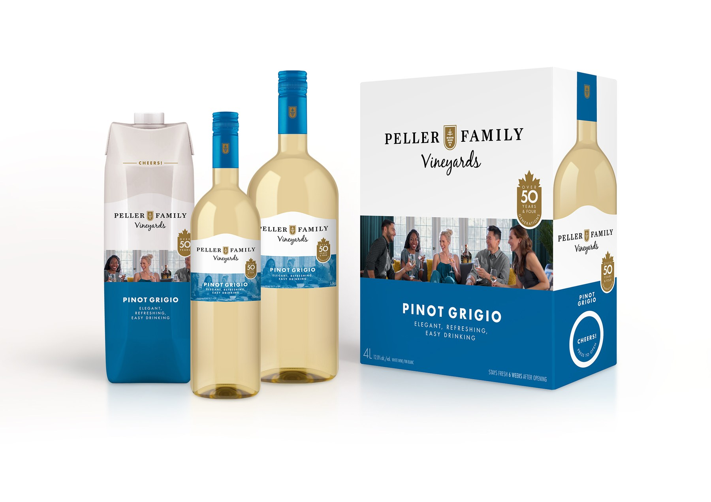
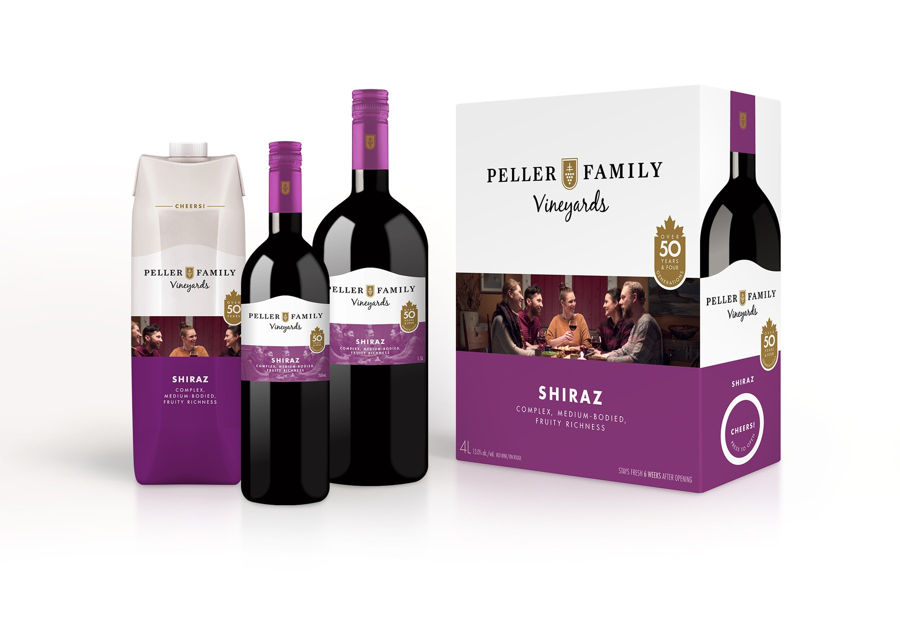
SKUs brought under one recognizable system.
Bottles / Cartons / Boxes / Varietals06 / What held
Andrew Peller’s 2025 public filing describes Peller Family Vineyards as the leading brand in its IDB segment, known for strong consumer loyalty nationwide. It also remains the company’s most extensive portfolio, with 4L bag-in-box as its best-selling format.
A rebrand is never risk-free. But recognition can be designed into the change.
Read the 2025 Andrew Peller filing ↗The useful lesson
A rebrand can move a business forward without throwing away the memory that made it valuable. The trick is knowing which parts carry trust, then testing the change before the whole portfolio moves.
Move a familiar brand carefully ↗